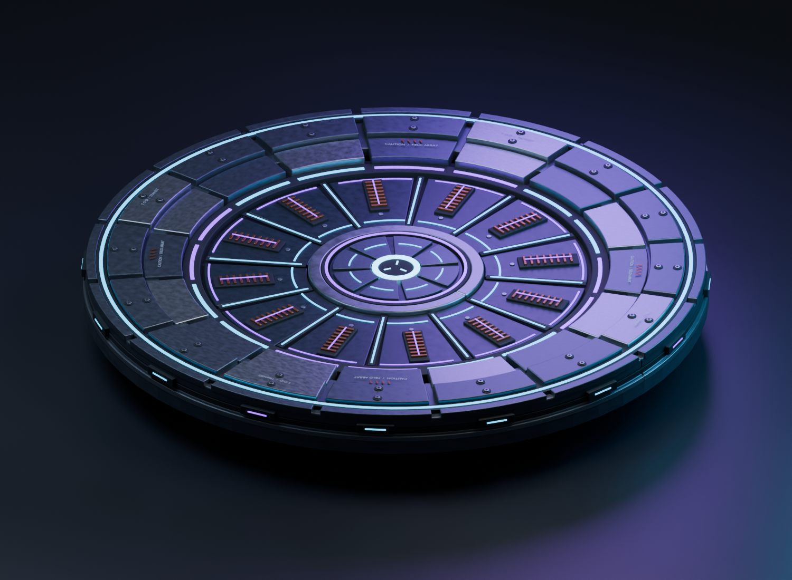
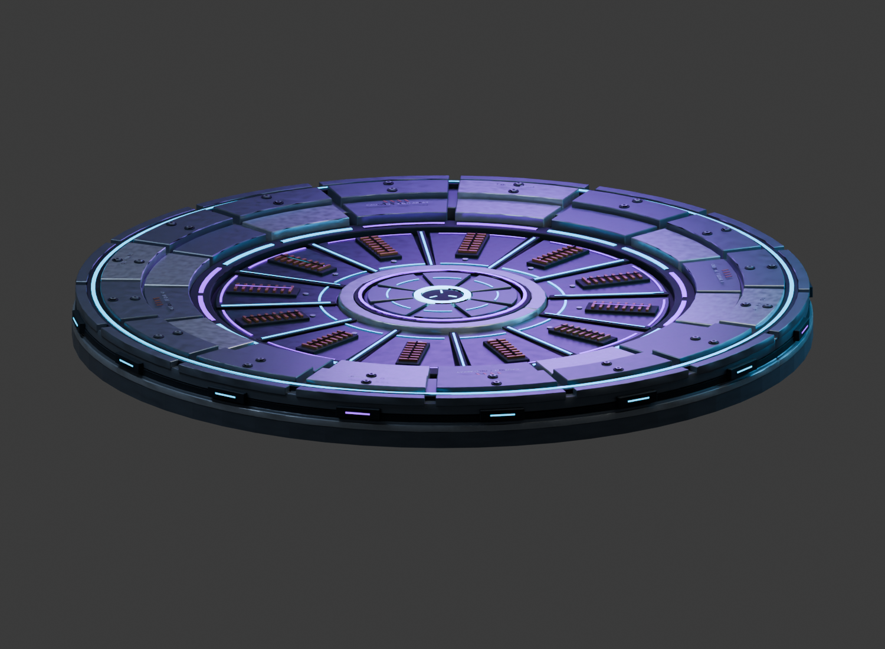

September 26: The user accepts the repaired surface. Current green-ready / yellow-pending review. Built in Archer's full build 16c; deployment checks passed, new colors await the user's game test. Original cyan/violet previews below are historical.
A layered metal deck with recessed cyan/violet energy channels, copper inductors and a central emitter. Modeled through Blender MCP. The original lower casting remains underneath.


These are Blender renders. The final BO3 lighting and glow need the user's in-game test.